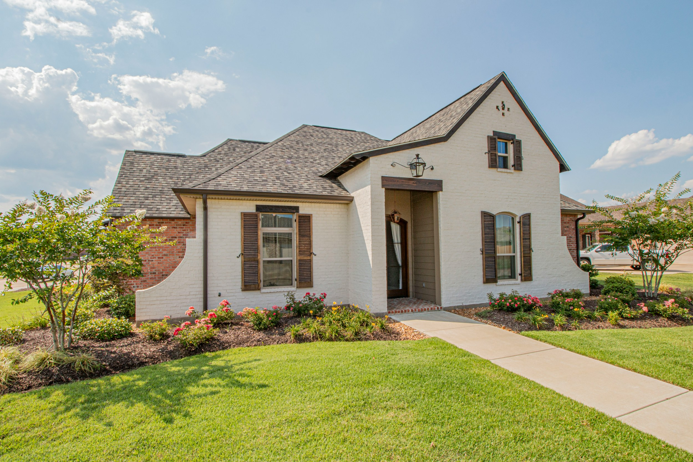
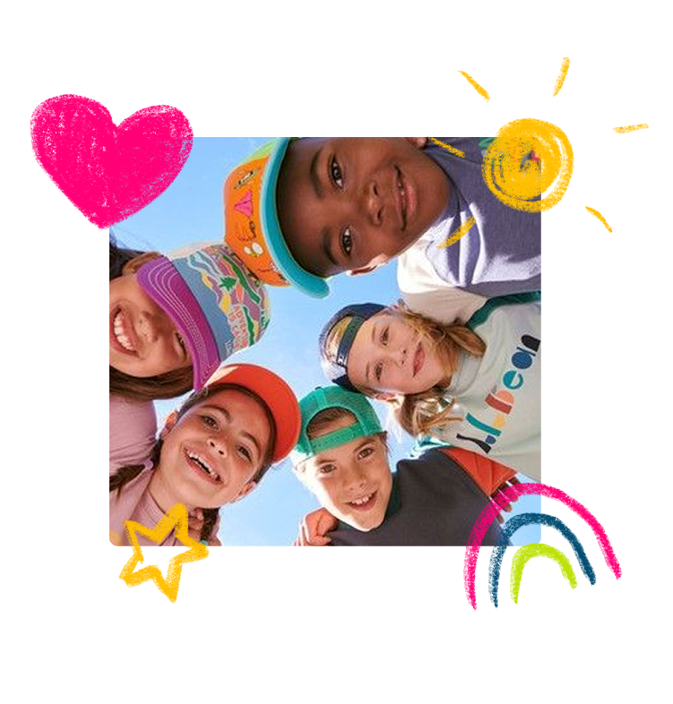
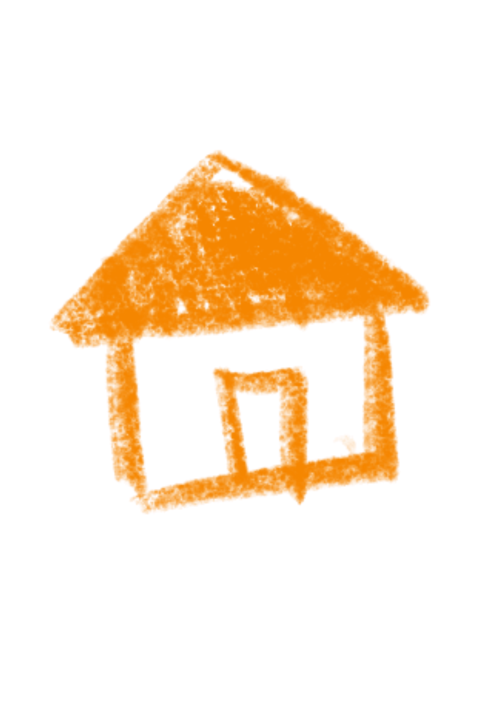
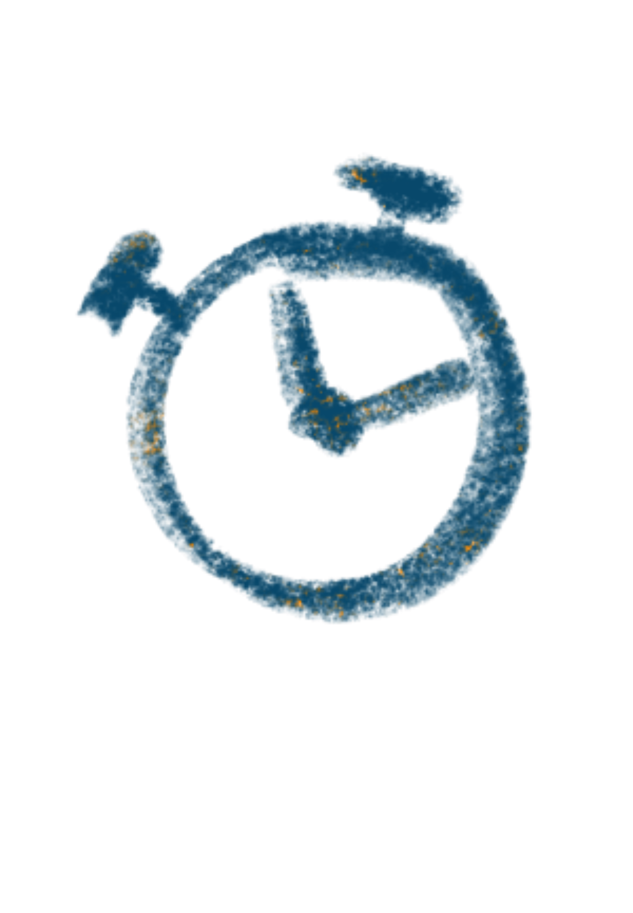
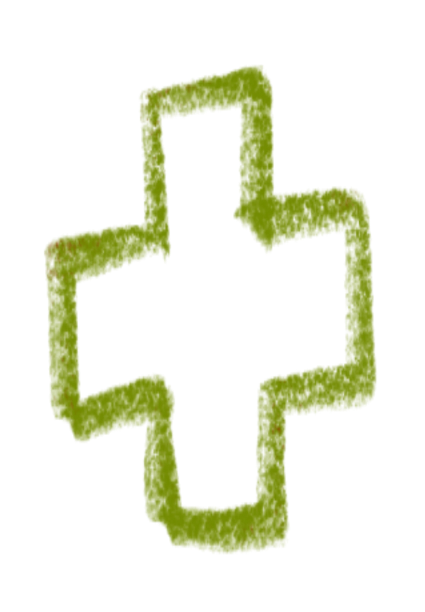
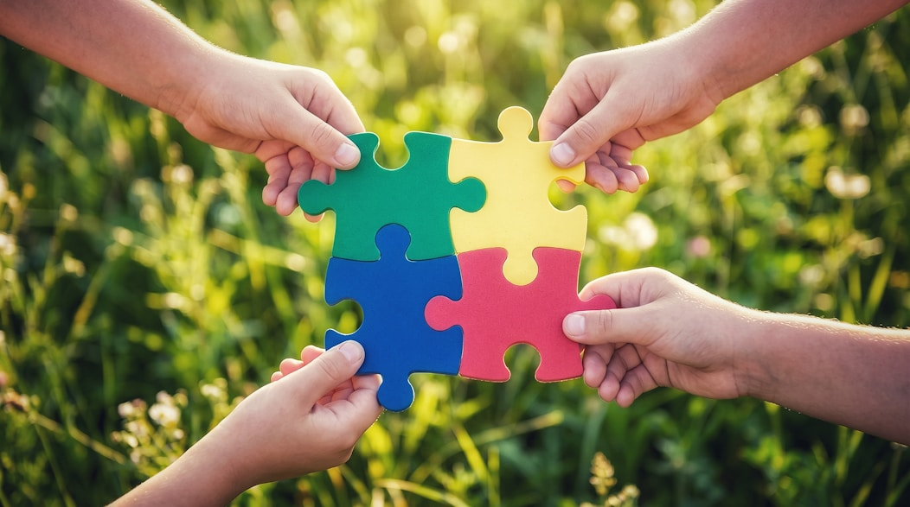
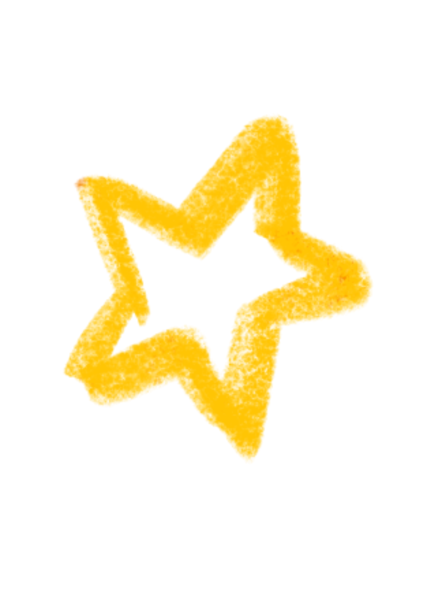
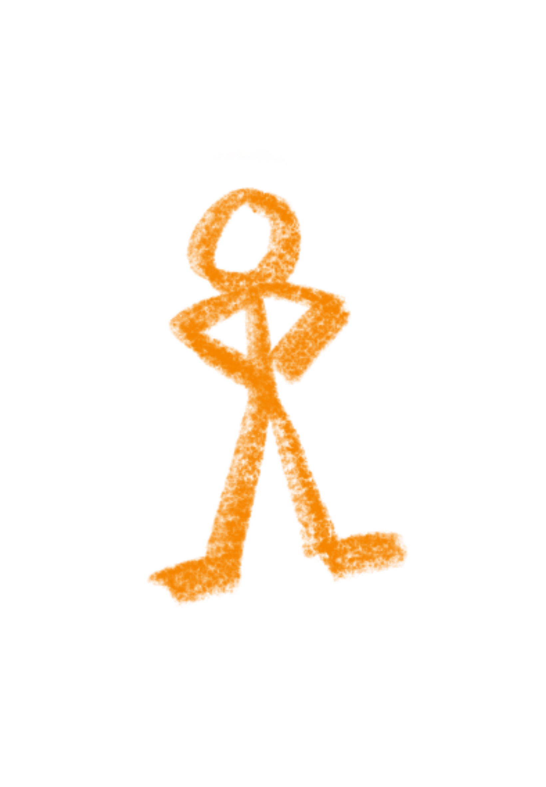

Nom de la maison
Localisation
Première maison fondée, dans un cadre verdoyant et familial, avec des permanents de vie présents 24h/24.
iue teieur htoaeiruh toieruh tozieurh oziuer
0000000
Lieu de vie et d'accueil
La Maison de Redaowsa accueille les enfants que le système ne peut plus protéger, en leur offrant stabilité, bienveillance et avenir.

Les maisons
Fondées par Mme Fatouma Abdoulkader, ces trois lieux de vie partagent les mêmes valeurs : bienveillance, stabilité et épanouissement de chaque enfant accueilli.

Localisation
Première maison fondée, dans un cadre verdoyant et familial, avec des permanents de vie présents 24h/24.
iue teieur htoaeiruh toieruh tozieurh oziuer
0000000
Localisation
Première maison fondée, dans un cadre verdoyant et familial, avec des permanents de vie présents 24h/24.
iue teieur htoaeiruh toieruh tozieurh oziuer
0000000
Notre engagement
L'Aide Sociale à l'Enfance protège des milliers d'enfants en France. Mais face à la saturation du système, certains tombent entre les mailles du filet — sans famille d'accueil disponible, sans place en foyer. Ce sont ces enfants que nous accueillons.

40%
40% des jeunes quittant l'ASE se retrouvent sans solution stable dans les mois suivants.

1/10
en France. Le système tourne à flux tendu, sans capacité d'absorption suffisante.

70%
avant leur prise en charge. Ces enfants ont besoin d'un accueil adapté, pas d'une liste d'attente.
Comment ça marche


Les Lieux de Vie & d'Accueil (LVA), reconnus par la loi du 2 janvier 2002, sont une réponse humaine et familiale. La Maison de Redaowsa s'inscrit dans cette démarche : accueillir les enfants qui sont dans le besoin
Des adultes permanents partagent le quotidien des enfants et ce dans un cadre :
Chaque enfant est accompagné selon son histoire, son rythme et ses besoins propres.

Des repères fixes, des adultes présents au quotidien et une continuité rassurante.
Un environnement affectif sincère, où chaque enfant se sent accueilli et en sécurité.
à Propos
Un LVA fonctionne comme une grande famille, encadrée par des professionnels formés et des permanents de vie présents au quotidien.

Orientation par
l'ASE ou le juge

Accueil &
évaluation

Projet de vie
individualisé

Vie quotidienne
encadrée

Préparation à
l'autonomie
Partenaires
La Maison de Redaowsa travaille en étroite collaboration avec des acteurs institutionnels, associatifs et privés.
Autorité de tutelle et financement principal via les dotations de placement ASE et contrôle du projet éducatif.
Écoles, orthophonistes, pédopsychiatres, médecins scolaires : un réseau de soins pour chaque enfant.
À propos
Fondatrice & Permanente — La Maison de Redaowsa
« Ces enfants n'ont pas choisi leur histoire. Notre rôle est de leur offrir un présent stable et un avenir possible. »